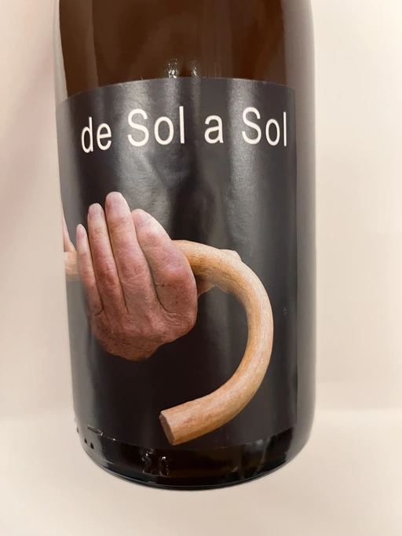

- Type
- White Still, Dry
- Producer
- Esencia Rural
- Vintage
- 2019
- Location
- Spain, Vino de Mesa
- Grapes
- Airén
- Alcohol
- 13.6
- Sugar
- 1.7
- Price
- 505 UAH
- Cellar
- N/A
Ratings
2022-12-22 - 7.25
Crazy macerated (Tinaja!) Airén. Murky and deep orange colour. And it smells like someone was trying to make a surströmming out of apricots. Add some acetone with cabbage, and voilà! The acidity is not high here, but it’s so elevated by excessive amounts of volatile acidity. Overall the wine is interesting but it has so many rough edges that not everyone can tolerate. Yet, in my opinion, it’s a friendly and bright style.